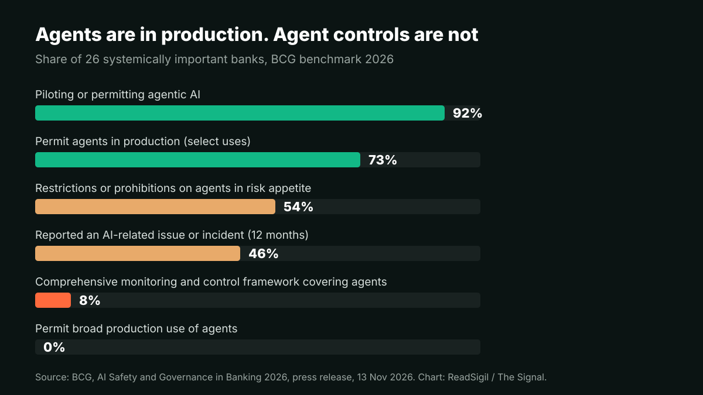

The Signal · Issue 08 · Agents
Most big banks now let AI agents into production. Only 8% have the controls to watch them
BCG's benchmark of 26 systemically important banks finds agents in production for select uses at 73% of them, but agents make up 10% or less of the AI portfolio at 88%, and 46% reported an AI-related issue or incident in the past year. For now, most banks are managing agents by prohibition. That works only while volumes are small.

Facts are attributed and linked to their sources. The analysis and opinions are the author's own.
What it is
On 13 November Boston Consulting Group published AI Safety and Governance in Banking 2026, a benchmark of 26 global and domestic systemically important banks. Ninety-two percent are piloting or permitting agentic AI, and 73% permit agents in production for select use cases. None permit broad production use, and at 88% of banks agents make up 10% or less of the AI portfolio. Fifty-four percent have written restrictions or prohibitions on agentic AI into their risk-appetite frameworks. Only 8% have "a comprehensive, standardized monitoring and control framework that explicitly covers agents". Forty-six percent reported an AI-related issue or incident in the past 12 months, and more than a quarter said AI systems were falling behind their promised business case.

The foundations look better than the day-to-day controls. Ninety-six percent manage AI risk through their existing risk frameworks, 73% have defined their appetite for AI risk, up from 57% in 2025, and 77% have a dedicated AI policy. But fewer than half have a centralised, tool-based AI inventory, and none has a comprehensive human-oversight framework that is consistently implemented across AI systems. BCG also reports that banks with more mature risk management are 2.5 times as likely to be advanced AI adopters, and that banks using standardised, pre-approved patterns for lower-risk uses are nearly twice as likely to take those uses from idea to production in under six months.
Why it matters
The 8% figure is the headline, but the 54% figure explains it. Most large banks are letting agents in while relying on rules about where agents may not go, rather than tools that watch what they do. That is a sensible holding position while agents are a tenth of the portfolio or less. It does not scale. A prohibition has to be enforced by someone who knows where every agent is, and fewer than half of these banks have a tool-based inventory. As Issue 05 put it, you cannot switch off an agent you have not counted.
A prohibition is a control only if you know where every agent is. Fewer than half of these banks have a tool-based inventory.
Two cautions on reading the report. The 46% incident figure covers AI generally, not agents in particular, and BCG's release does not say how serious the incidents were. And "2.5 times as likely" is an association: banks that are good at risk management may adopt more AI, or banks that adopt more AI may be forced to get better at risk. Either way the practical lesson holds. BCG's Anne Kleppe says that with agents still a small share of portfolios, "there is a window to get that right before their use expands." I agree, and the cheapest move inside that window is BCG's own finding on patterns: approve a small number of standard agent designs, with logging, limits and a kill switch built in, so teams can reuse them, and save deep review for the novel cases.
What I'd watch
- Next year's share of banks with comprehensive agent controls, and whether the 46% incident figure is broken down by severity.
- Whether supervisors start asking for agent inventories by name, as some are already doing for material service providers.
- How many banks move agents beyond 10% of their AI portfolio, and whether monitoring keeps pace.
Sources
- Operationalizing AI Governance Gives Banks an Advantage in Scaling AI BCG press release, 13 Nov 2026.